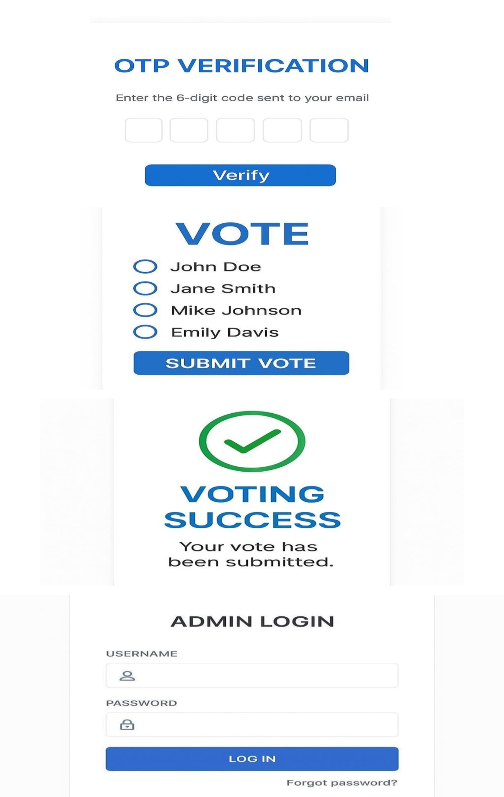
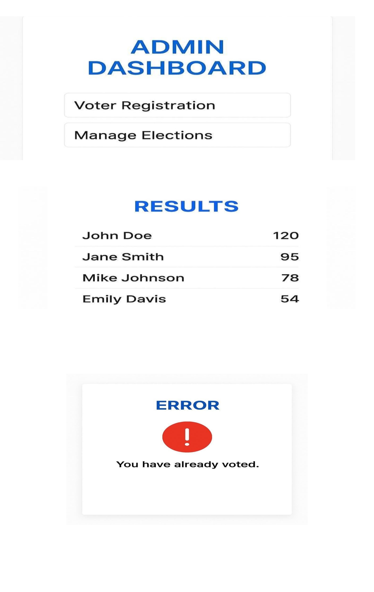

Online Voting System with OTP Verification is a secure web-based voting application designed to provide a reliable and authenticated voting process.
The system allows users to register, login, verify using OTP, and cast their vote securely. Admin can manage voting details and view results.


Sandhiya R